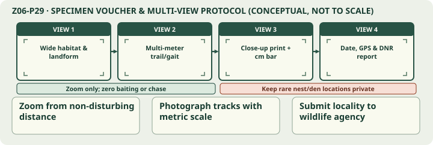

Z06-P29 · Hunting and fishing · New manuscript
Wildlife Species Documentation with Scale and Locality Records
Document notable wildlife sightings, tracks, and rare-species encounters cleanly for agency or biodiversity records without harassing animals.
When it applies · Reporting rare species, fish anomalies, or tracks to MN DNR or Bell Museum.
Equipment · Camera with zoom lens, metric scale for stationary tracks, GPS/notebook.

Actions
- Photograph live wildlife only with a zoom lens from a distance that causes zero flight or stress behavior, never baiting or chasing subjects for closer shots.[H16, L05]
- For stationary tracks or sign, capture both a multi-meter gait overview and a perpendicular close-up with a readable metric scale ruler.[H16]
- Log exact date, time, county, GPS coordinates, and habitat context, keeping exact rare-species nest or den coordinates confidential except when reporting to MN DNR.[L04, H16]
Failure recognition · Broadcasting exact rare-species locations publicly or crowding wildlife for phone photos exposes animals to poaching and stress.[L04, L05]
Verify · Sightings carry complete non-disturbing visual evidence, metric scale where applicable, and responsible agency reporting.[H16, L04]
Stop or change course · Stop photographing immediately if an animal retreats, vocalizes alarm, or focuses defensively on observers.[H12, L05]
Evidence and editorial notes
- H12 · Minnesota DNR · Living with Black Bears and Encounter Safety (Current web edition)
- Section: Black bear encounter avoidance and attractant control · Conditions: Campsites, fishing shores, and trails in bear range
Support: Store food, fish waste, and scented items securely; make calm noise in thick cover, back away slowly without running, and never approach cubs.
Limitations: Bear behavior varies with habituation and food stress; carry and know local bear-deterrent rules where appropriate. · Conflicting evidence: None noted.
Editorial note: Core Z06 wildlife encounter avoidance. · Specialist reviewer: Wildlife conflict specialist
Primary source · checked 2026-11-25
Current assessment · A04-H12 (2026-11-25) · Reopened: earlier closure narrowed (A04): Source supports managing attractants. The full behavior string spans encounters and may depend on species and behavior. Do not reuse as unconditional advice. Limits: Specialist review PENDING (Wildlife conflict specialist); publication HOLD. All release decisions pending. - H16 · Minnesota DNR · Mammals of Minnesota Species and Sign Reference (Current web edition)
- Section: Mammal ecology, seasonal movement, and sign interpretation · Conditions: Reading wildlife tracks, scat, browse, and trail patterns
Support: Substrate moisture, snow crust, and animal gait distort track dimensions; combine multiple signs and habitat context rather than single prints.
Limitations: Never handle unknown scat barehanded due to parasite eggs (e.g., Baylisascaris); sign interpretation is ecological observation, not harvest authorization. · Conflicting evidence: None noted.
Editorial note: Grounds Z06 tracking in ecology and hygiene. · Specialist reviewer: Wildlife ecologist
Primary source · checked 2026-11-25 - L04 · Minnesota DNR · Minnesota Endangered, Threatened, and Special Concern Species (Current web edition)
- Section: State endangered, threatened, and special-concern species · Conditions: Habitats supporting state-listed mammals, birds, reptiles, and amphibians
Support: Unselective devices endanger state-listed species including raptors, mustelids, and turtles.
Limitations: Verify protected-species distribution and never disturb protected habitats or dens. · Conflicting evidence: None noted.
Editorial note: Protects state-listed nongame species. · Specialist reviewer: Conservation biologist
Primary source · checked 2026-11-25
Current assessment · A04-L04 (2026-11-25) · Open: support partial or missing (A04): Lists species and their status but no capture-rate evidence across device and habitat conditions. Use regulatory avoidance only. Limits: Specialist review PENDING (Conservation biologist); publication HOLD. All release decisions pending. - L05 · Minnesota DNR · Nongame Wildlife Program and Protected Species (Current web edition)
- Section: Nongame wildlife protection and ecological role · Conditions: Non-harvested wildlife across forests, wetlands, and prairies
Support: Most wild mammals, songbirds, raptors, and reptiles are legally protected nongame species that may not be captured or killed.
Limitations: Ecological stewardship prioritizes observation and avoidance over capture. · Conflicting evidence: None noted.
Editorial note: Frames Z07 ecological ethics. · Specialist reviewer: Nongame wildlife biologist
Primary source · checked 2026-11-25
Source lineage · New manuscript (Z06 P17 species documentation) · Classification · New manuscript.